Name: Math 428
Exam 3 solution guide
7 May 2002
Always the beautiful answer who asks a more beautiful question.
-E. E. Cummings
Instructions: Show all work to receive full or partial credit. You may use a scientific calculator, your notes and your textbook on this exam. All University rules and guidelines for student conduct are applicable.
To prove that backward Euler is A-stable, we must show that the region of absolute stability includes the entire right half-plane when
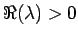
0$"> for the ODE
Substituting the
ODE into backward Euler, we find that
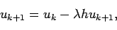
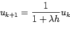
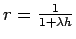
. If we do a little bit of algebra, we see that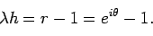
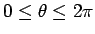
. Thus, the region of absolute stability is everything except a disk of radius one centered at -1 + 0 i in the complex plane, so the method is A-stable.
Here, you could use a lot of things. I had hoped you would use
building blocks from your homework. For instance, we can use the
second order finite difference for yk'' for HW6.
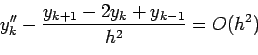
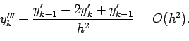
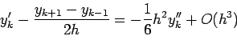
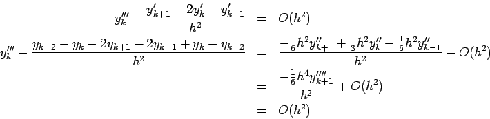
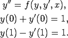
The secant method had already been discussed in some detail in class. The key is to find an initial value problem (IVP) to shoot with, and a function for which has a root for the appropriate boundary conditions.
To find an appropriate IVP, we can set y(0)=z where z is our
shooting parameter. Then, we see that we meet the BC on the left by
setting
y'(0) = 1-z. That's all you have to do. So, our IVP is
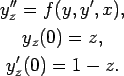
Let uz be a numerical solution to this problem. What must we do to
satisfy the BC's on the right? Well, we want
y(1)-y'(1) = 1. So,
our function should be something like
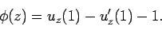
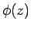
, we will solved the original boundary value problem.I have not yet described the secant method. While it was given in class, I'll describe it here. We begin with two values of z called z1 and z1 such that
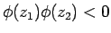
.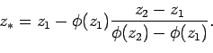
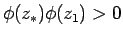
0$">, let z1 = z*. If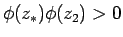
0$">, let z2 = z*.
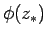
is close to some tolerance, bail out of the algorithm and return z. Otherwise, return to step 1.
Here, we begin with the same IVP as in the previous problem, we need an auxiliary IVP so that we can find
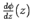
.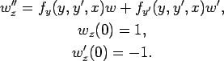
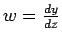
based on the solution of yz. Let vzbe a numerical solution for wz. Now, we can see that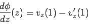
Everyone recalls that Newton's method is
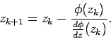
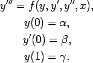
This is very similar to the example given in class. In this case, the
IVP is
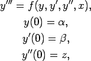
and the objective function would be
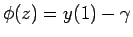
.
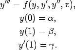
The key to this problem is to realize that one must take advantage of
the fact that two of the BC's are on the right rather than the left.
One can reverse the IVP by changing variables, s = 1-x. Then, an
appropriate IVP would be
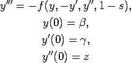
where
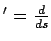
. Not everyone was this rigorous, but I accepted reasonable detail about solving the problem in reverse. The objective function would be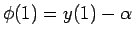
.